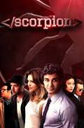

Cabe Gallo recruits computer intellect Walter O'Brien, who has a 197 IQ, and his own team of bright experts. Together they solve major crises that arise around the globe. Executive producers: Justin Lin, Nicholas Wootton, Alex Kurtzman · See more Nominations: People's Choice Award for Favorite New TV Drama Final episode date: April 16, 2018 First episode date: September 22, 2014 (USA) Genres: Drama, Action, Adventure, Soap opera, Thriller, Detective fiction, crime fiction, Police procedural, Action fiction Languages: English, Russian
This website is dedicated to students of TUD College in Blanchardstown who are passionate about cybersecurity and love watching cybersecurity-related TV series. Our platform curates the best hacking, cybercrime, and tech-defense shows to keep students entertained and informed about the latest trends in cybersecurity.
Email: ccybertvshows@gmail.com
Phone: +353 083 287 200
Address: 42 Silicon Docks, Grand Canal Quay, Dublin, Ireland